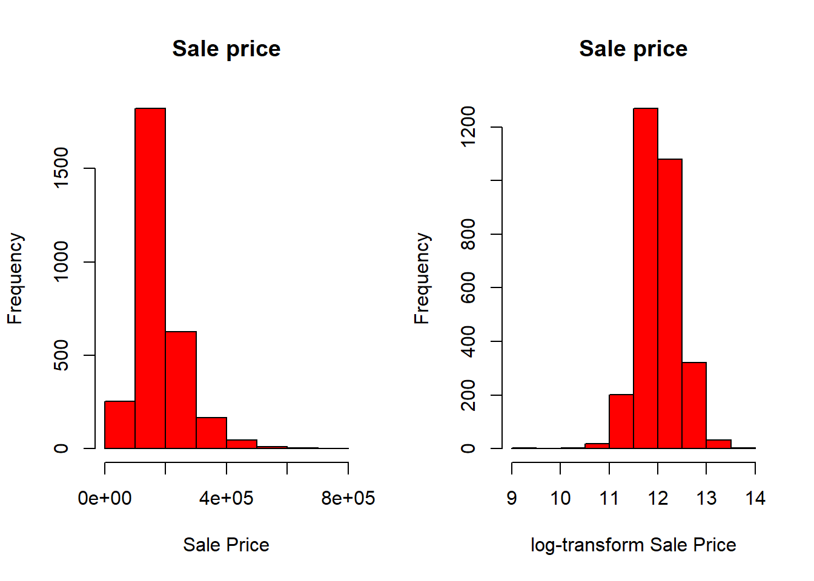
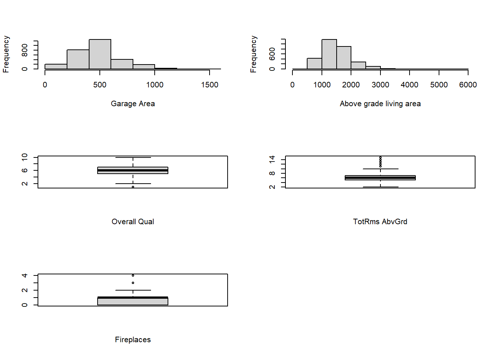
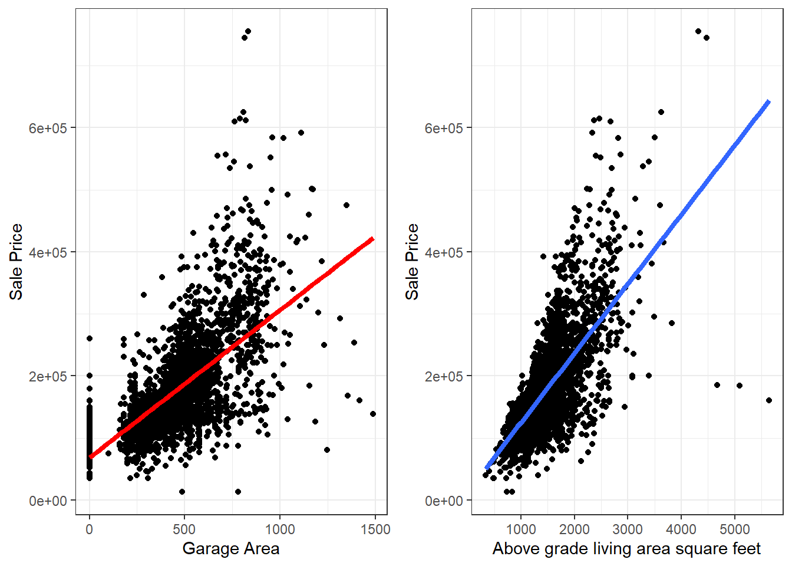
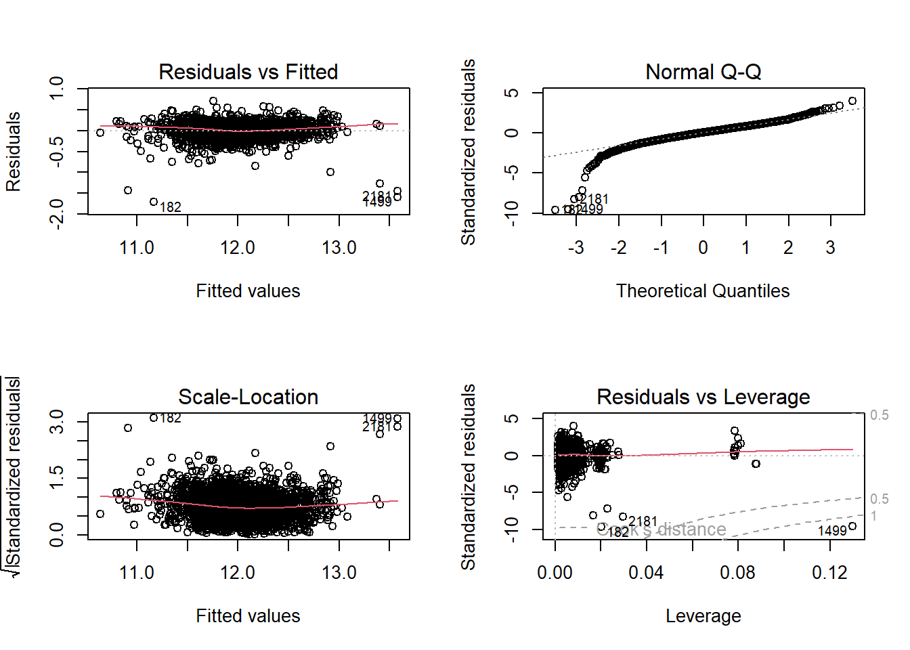
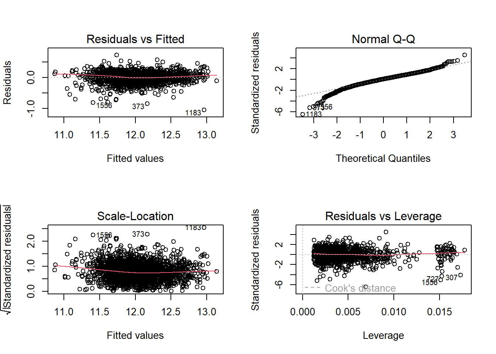
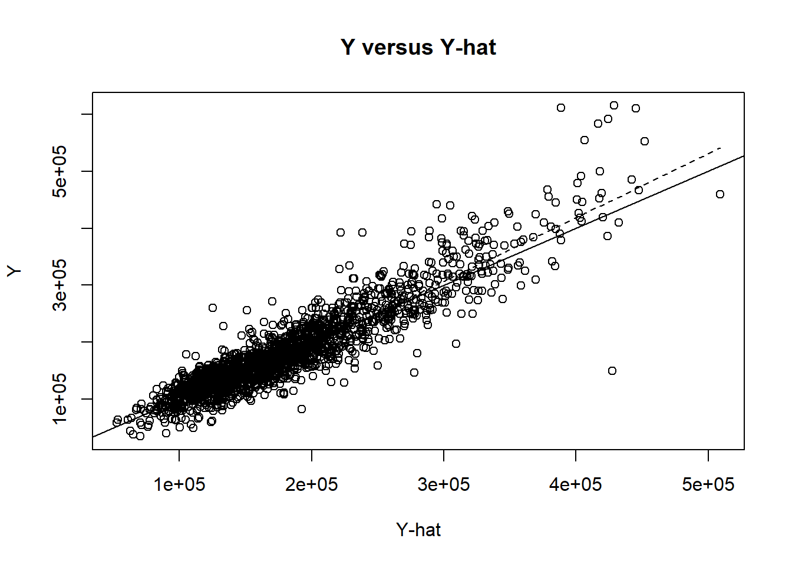

Garage.Cars Overall.Qual TotRms.AbvGrd Gr.Liv.Area
Min. :0.000 Min. : 1.000 Min. : 2.000 Min. : 334
1st Qu.:1.000 1st Qu.: 5.000 1st Qu.: 5.000 1st Qu.:1126
Median :2.000 Median : 6.000 Median : 6.000 Median :1442
Mean :1.767 Mean : 6.095 Mean : 6.443 Mean :1500
3rd Qu.:2.000 3rd Qu.: 7.000 3rd Qu.: 7.000 3rd Qu.:1742
Max. :5.000 Max. :10.000 Max. :15.000 Max. :5642
Garage.Area Fireplaces Yr.Sold SalePrice
Min. : 0.0 Min. :0.0000 Min. :2006 Min. : 12789
1st Qu.: 320.0 1st Qu.:0.0000 1st Qu.:2007 1st Qu.:129500
Median : 480.0 Median :1.0000 Median :2008 Median :160000
Mean : 472.8 Mean :0.5995 Mean :2008 Mean :180806
3rd Qu.: 576.0 3rd Qu.:1.0000 3rd Qu.:2009 3rd Qu.:213500
Max. :1488.0 Max. :4.0000 Max. :2010 Max. :755000 STA302 Project
What factors and how influence Ames Iowa Housing Sale Price
Abstract
First sentence. Second sentence. Third sentence. Fourth sentence.
1 Introduction
The housing issue is a pillar industry of a country, and the healthy development of the housing issue affects the country’s economic development level. In order to help the stable development of the housing transaction market, this project plans to better evaluate the value of housing transactions for Ames. So, the main purpose of this project is to explore the factors that influence the sale price of homes in Ames, Iowa, and how they affect the home sales price. The characteristics of the homes we selected include central air condition, car capacity of garage, general shape of property, rate of overall quality, total above ground living area, number of fireplaces and sale year. The remainder of this paper is structured as follows. Section 2….
2 Data
The Raw data collects 82 features of the house, and data quality is not high.
N Y
196 2733
N Y
0.06691704 0.93308296
IR1 IR2 IR3 Reg
979 76 16 1858
IR1 IR2 IR3 Reg
0.334243769 0.025947422 0.005462615 0.634346193 
As you can see from the figure, house sales prices are right-skewed data. When building the model, we need to log-transform the house sales prices to make them conform to the normal distribution.

`geom_smooth()` using formula = 'y ~ x'
`geom_smooth()` using formula = 'y ~ x'
The above scatter plot shows that both Garage Area and Above grade living area have a certain positive impact on sale price, especially the positive correlation between Above grade living area and sale price is very strong.
3 Model
3.1 Model set-up
After data processing, the data set is a clean data set with 2929 observations and 10 house characteristic variables. In order to evaluate the performance of the model, we randomly split the analysis data set into a test set and a training set in a ratio of 75%:25%.
The first model we build is the full model. We then improve the model by removing insignificant variables.
Call:
lm(formula = log(SalePrice) ~ ., data = train)
Residuals:
Min 1Q Median 3Q Max
-1.70702 -0.09049 0.01101 0.10726 0.70988
Coefficients:
Estimate Std. Error t value Pr(>|t|)
(Intercept) 1.817e+01 7.482e+00 2.429 0.01523 *
Central.AirY 2.232e-01 1.674e-02 13.334 < 2e-16 ***
Lot.ShapeIR2 5.908e-02 2.524e-02 2.341 0.01932 *
Lot.ShapeIR3 -1.409e-01 5.068e-02 -2.781 0.00547 **
Lot.ShapeReg -4.995e-02 8.550e-03 -5.841 5.95e-09 ***
Garage.Cars 6.232e-02 1.132e-02 5.502 4.18e-08 ***
Overall.Qual 1.393e-01 3.886e-03 35.854 < 2e-16 ***
TotRms.AbvGrd -1.477e-03 4.271e-03 -0.346 0.72961
Gr.Liv.Area 2.032e-04 1.556e-05 13.056 < 2e-16 ***
Garage.Area 1.532e-04 3.906e-05 3.922 9.06e-05 ***
Fireplaces 5.108e-02 6.997e-03 7.300 4.00e-13 ***
Yr.Sold -3.828e-03 3.725e-03 -1.028 0.30418
---
Signif. codes: 0 '***' 0.001 '**' 0.01 '*' 0.05 '.' 0.1 ' ' 1
Residual standard error: 0.18 on 2185 degrees of freedom
Multiple R-squared: 0.8055, Adjusted R-squared: 0.8045
F-statistic: 822.7 on 11 and 2185 DF, p-value: < 2.2e-16
Call:
lm(formula = log(SalePrice) ~ . - TotRms.AbvGrd - Yr.Sold, data = train)
Residuals:
Min 1Q Median 3Q Max
-1.71281 -0.08994 0.01188 0.10828 0.71389
Coefficients:
Estimate Std. Error t value Pr(>|t|)
(Intercept) 1.048e+01 2.337e-02 448.365 < 2e-16 ***
Central.AirY 2.237e-01 1.672e-02 13.375 < 2e-16 ***
Lot.ShapeIR2 5.990e-02 2.519e-02 2.378 0.01751 *
Lot.ShapeIR3 -1.390e-01 5.063e-02 -2.745 0.00609 **
Lot.ShapeReg -5.012e-02 8.547e-03 -5.864 5.22e-09 ***
Garage.Cars 6.200e-02 1.128e-02 5.497 4.32e-08 ***
Overall.Qual 1.396e-01 3.859e-03 36.171 < 2e-16 ***
Gr.Liv.Area 1.993e-04 9.991e-06 19.943 < 2e-16 ***
Garage.Area 1.548e-04 3.883e-05 3.988 6.89e-05 ***
Fireplaces 5.109e-02 6.970e-03 7.330 3.23e-13 ***
---
Signif. codes: 0 '***' 0.001 '**' 0.01 '*' 0.05 '.' 0.1 ' ' 1
Residual standard error: 0.1799 on 2187 degrees of freedom
Multiple R-squared: 0.8054, Adjusted R-squared: 0.8046
F-statistic: 1006 on 9 and 2187 DF, p-value: < 2.2e-16Analysis of Variance Table
Model 1: log(SalePrice) ~ (Central.Air + Lot.Shape + Garage.Cars + Overall.Qual +
TotRms.AbvGrd + Gr.Liv.Area + Garage.Area + Fireplaces +
Yr.Sold) - TotRms.AbvGrd - Yr.Sold
Model 2: log(SalePrice) ~ Central.Air + Lot.Shape + Garage.Cars + Overall.Qual +
TotRms.AbvGrd + Gr.Liv.Area + Garage.Area + Fireplaces +
Yr.Sold
Res.Df RSS Df Sum of Sq F Pr(>F)
1 2187 70.804
2 2185 70.766 2 0.037812 0.5837 0.5579Analyzing the model of full and significant variables through the Partial F test, we found that the p value is much greater than 0, which shows that we cannot reject the null hypothesis and there is not much difference in the performance of the two models. But in terms of the number of variables, we still choose the model with significant variables.

The residual test found that both ends of the QQ graph deviated greatly from the straight line and were affected by special points such as outliers and leverage points. So, in order to further improve the performance of model fitting, we will delete special points from the training set.
After deleting special points such as level points, a new model was refitted.
Call:
lm(formula = log(SalePrice) ~ . - TotRms.AbvGrd - Yr.Sold, data = new_train)
Residuals:
Min 1Q Median 3Q Max
-1.04702 -0.08837 0.01205 0.10368 0.72952
Coefficients:
Estimate Std. Error t value Pr(>|t|)
(Intercept) 1.052e+01 2.629e-02 399.959 < 2e-16 ***
Central.AirY 1.622e-01 2.087e-02 7.771 1.23e-14 ***
Lot.ShapeReg -4.749e-02 7.957e-03 -5.968 2.83e-09 ***
Garage.Cars 3.296e-02 1.230e-02 2.679 0.00744 **
Overall.Qual 1.319e-01 3.806e-03 34.657 < 2e-16 ***
Gr.Liv.Area 2.276e-04 1.064e-05 21.382 < 2e-16 ***
Garage.Area 3.237e-04 4.289e-05 7.547 6.73e-14 ***
Fireplaces 5.164e-02 6.616e-03 7.805 9.47e-15 ***
---
Signif. codes: 0 '***' 0.001 '**' 0.01 '*' 0.05 '.' 0.1 ' ' 1
Residual standard error: 0.1623 on 2009 degrees of freedom
Multiple R-squared: 0.8228, Adjusted R-squared: 0.8222
F-statistic: 1332 on 7 and 2009 DF, p-value: < 2.2e-163.1.1 Model justification

Clearly the model has improved.
3.1.1.1 A1:Linearity of the Relationship

The above scatter plot fits the relationship between the predicted value and the actual value. You can see that these points are almost on or close to the line, so we can say that a linear relationship is satisfied.
3.1.1.2 A2.Covariance of Errors
3.1.1.3 A3.Common Error variance
homoskedasticity
3.1.1.4 A4. Normality of Error
4 Results
Call:
lm(formula = log(SalePrice) ~ . - TotRms.AbvGrd - Yr.Sold, data = new_train)
Residuals:
Min 1Q Median 3Q Max
-1.04702 -0.08837 0.01205 0.10368 0.72952
Coefficients:
Estimate Std. Error t value Pr(>|t|)
(Intercept) 1.052e+01 2.629e-02 399.959 < 2e-16 ***
Central.AirY 1.622e-01 2.087e-02 7.771 1.23e-14 ***
Lot.ShapeReg -4.749e-02 7.957e-03 -5.968 2.83e-09 ***
Garage.Cars 3.296e-02 1.230e-02 2.679 0.00744 **
Overall.Qual 1.319e-01 3.806e-03 34.657 < 2e-16 ***
Gr.Liv.Area 2.276e-04 1.064e-05 21.382 < 2e-16 ***
Garage.Area 3.237e-04 4.289e-05 7.547 6.73e-14 ***
Fireplaces 5.164e-02 6.616e-03 7.805 9.47e-15 ***
---
Signif. codes: 0 '***' 0.001 '**' 0.01 '*' 0.05 '.' 0.1 ' ' 1
Residual standard error: 0.1623 on 2009 degrees of freedom
Multiple R-squared: 0.8228, Adjusted R-squared: 0.8222
F-statistic: 1332 on 7 and 2009 DF, p-value: < 2.2e-16- When other factors remain unchanged, having central air conditioning increases the sales price of a house by 16.22%.
5 Discussion
5.1 First discussion point
5.2 Second discussion point
5.3 Third discussion point
5.4 Weaknesses and next steps
Weaknesses and next steps should also be included.